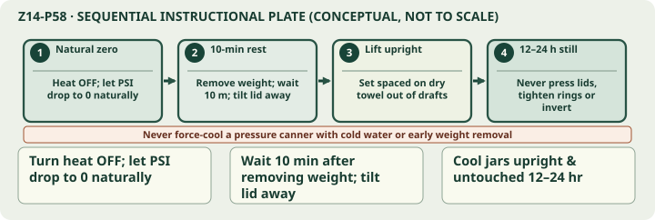

Z14-P58 · Food production and preservation · New manuscript
Depressurize pressure canners naturally and cool jars undisturbed 12 to 24 hours
Prevent explosive scalds, shattered jars, liquid siphoning, and false seals during the critical post-processing cooldown phase.
When it applies · Every finished pressure-canner and boiling-water-canner run.
Equipment · Heat-safe stove-off resting spot, dry folded towel or wooden cooling rack out of cold drafts, and jar lifter.

Actions
- Turn off the stove at timer completion and let a pressure canner DEPRESSURIZE NATURALLY on its own until the dial reads zero AND the safety lock pin drops completely—NEVER force-cool a pressure canner under cold running water, with wet towels, or by yanking the vent weight off early (forced cooling drops pressure violently, causes severe burns, ruins seals, and cuts validated come-down lethality!).[P07, P09]
- Once zero pressure is confirmed, remove the vent weight/regulator and wait 10 full minutes BEFORE carefully unlatching and lifting the lid angled AWAY from your face; lift jars straight upright (never tilted!) onto a padded dry surface spaced 1 to 2 inches apart out of cold air drafts.[P07, P09]
- Leave cooling jars completely UNDISTURBED for 12 to 24 hours—do NOT push down on lid centers while hot, do NOT retighten screw bands (which breaks fresh seals!), and do NOT invert jars upside down.[P09]
Failure recognition · Yanking the pressure weight off early to save time, causing scalding liquid to siphon out of every jar and breaking half the vacuum seals.[P07, P09]
Verify · Confirm natural zero-pressure depressurization, 10-minute post-weight wait, upright jar transfer, and full 12–24 hour undisturbed cooling.[P07, P09]
Stop or change course · Never attempt to pry open a pressurized canner lid if the safety lock remains up or steam still hisses from the vent pipe.[P07]
Evidence and editorial notes
- P07 · NCHFP · Using Pressure Canners (current web edition)
- Section: Using Pressure Canners > Low-Acid Foods, Venting, and Gauge Accuracy · Conditions: Low-acid foods (pH > 4.6: meats, poultry, seafood, most vegetables, soups)
Support: Process all low-acid foods strictly in a validated pressure canner (NOT a boiling-water canner, electric multicooker unless independently validated, or oven), vent steam steadily for 10 full minutes before pressurizing, maintain target pressure for the full altitude-adjusted time, and test dial gauges annually.
Limitations: Dropping pressure mid-cycle requires bringing pressure back up and restarting the entire processing timer from zero. · Conflicting evidence: Refutes myths that prolonged boiling-water processing destroys C. botulinum spores.
Editorial note: Core low-acid botulism-prevention boundary in Z14. · Specialist reviewer: Food microbiology and Extension preservation specialist
Primary source · checked 2026-11-24 - P09 · NCHFP · Using Pressure Canners (current web edition)
- Section: Headspace, Jar Preparation, Two-Piece Lids, and Cooling Seals · Conditions: Mason-type canning jars with two-piece metal lids and screw bands
Support: Use true canning jars (never commercial mayonnaise jars), leave exact recipe headspace, remove trapped air bubbles, wipe jar rims clean, tighten bands fingertip-tight only, and let jars cool undisturbed 12–24 hours before checking vacuum seals and removing rings for storage.
Limitations: Inverting jars, tightening bands after cooling, or re-using flat sealing lids causes seal failure and silent spoilage. · Conflicting evidence: None; directly targets top home-canning mechanical failures.
Editorial note: Grounds jar-seal mechanics and inspection cards in Z14. · Specialist reviewer: Food preservation specialist
Primary source · checked 2026-11-24
Source lineage · NCHFP Pressure Canning Cooling; new manuscript · Classification · New manuscript.